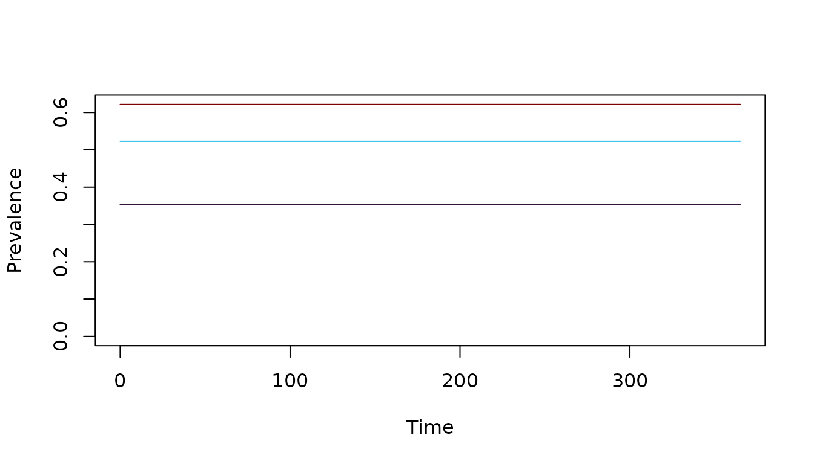
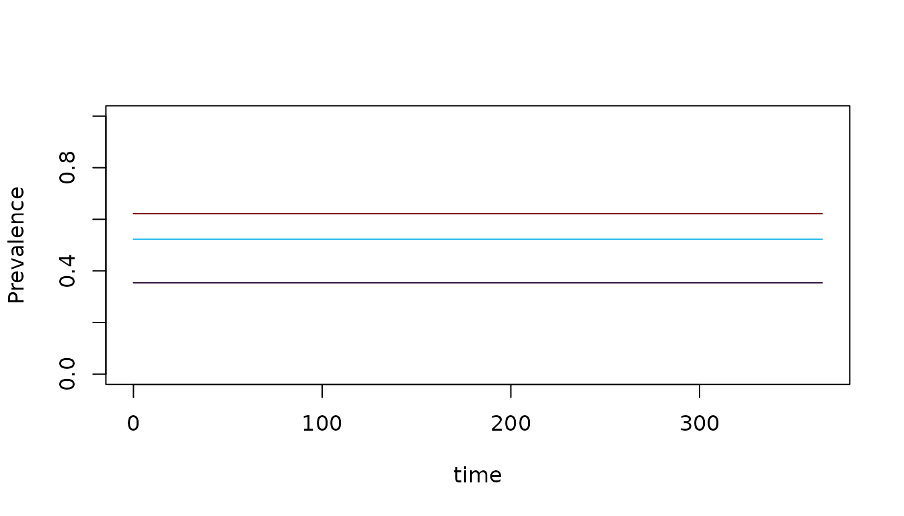

SIS Dynamics: an XH Module
Generalized SIS (Susceptible-Infected-Susceptible) Dynamics
Source:vignettes/human_sis.Rmd
human_sis.RmdXname = "SIS"CONTENTS:
-
Basic Dynamics
the comparment model
infectiousness
diagnostics and detection
-
The
SISModule - a description of the full implementationmass treatment
human demography
notation and setup
variables
dynamics
-
Example - a fully worked example, with tests
using setup
another test
the long way
Basic Dynamics
For the XH component, the SIS (Susceptible-Infected-Susceptible) model implements a basic system of differential equations. It is, perhaps, the simplest model for an endemic pathogen of humans.
The model we have implemented is extensible, with terms for human demography and mass treatment. Here we present the SIS model progressively in three steps:

The Compartment Model
A population is subdivided into susceptible (\(S\)) and infected and infectious (\(I\)) individuals, where the total population is \(H = S+I.\)
We let \(h\) denote the force of infection (FoI).
We let \(r\) denote the clearance rate for infections.
The dynamics are described by a pair of equations:
\[ \begin{array}{rl} \dot{I} &= h S - rI \\ \dot{S} &= -hS + rI \end{array} \]
We note that since, \(S=H-I,\) if \(H\) is known, then one of these equations is redundant, so instead we compute:
\[ \dot{I} = h (H-I) - rI \]
Note that if we introduce a change of variables, \(x = I/H\), then if \(dH/dt=0,\) the system is equivalent to:
\[ \dot{x} = h (1-x) - r x \] Pull and Grab (1974)1 fit a model like this to data describing malaria prevalence by age.
Infectiousness
Infected humans are not fully infectious. We assume that the fraction of bloodmeals on infectious humans that infect a mosquito is \(c,\) so the fraction of mosquitoes that become infected after a human blood meal is \(cI/H.\) The infectious density is computed as: \[F_I = c I\]
Diagnostics and Detection
The probability a human would test positive is q, so while true prevalence is \(x=I/H,\) observed prevalence would be \(qI/H.\) The model includes three parameters for detection:
d_lm- the probability of detecting parasites by light microscopyd_rdt- the probability of detecting parasites by rapid diagnostic testd_pcr- the probability of detecting parasites by PCR
The model is too simple to get any meaningful insights about detection.
The SIS Module
Mass Treatment
A port was included to simulate mass treatment. In the SIS model, mass treatment increases the clearance rate from \(r\) to \(r + \xi(t)\). After curing an infection, in this model, the humans become susceptible to infection again.
\[ \dot{I} = h (H-I) - \left(r+\xi\left(t\right)\right) I \]
During basic set up, the function returns no effect: \(\xi(t)=0\). Configuring a mass treatment
function is handled as an advanced setup option in
ramp.control (see ramp.control::Mass
Treatment)
Human Demography
The implementation of the model was generalized to consider human (or host) vital dynamics. The generalized system thus includes three ports:
The population birth rate, \(B(t, H)\)
A constant per-capita rate, \(\mu.\) The model does not include a parameter to describe disease-induced mortality
Dynamic population exchanges among strata, using a demographic matrix, \(D\).
For the moment, we set \(D\) to be a diagonal matrix with \(\mu\) on the main diagonal. Deaths affect \(H\) and \(I\), so:
\[ \begin{array}{rl} \dot{H} &= B(t, H) - \mu H \\ \dot{I} &= h (H-I) - \left(r+\xi\left(t\right)\right) I - \mu I \end{array} \]
More generally, we are assuming that a population could be
stratified, such that the variables, terms, and parameter are all
vectors with length nStrata. Utilities in
ramp.demog make it possible to simulate dynamic exchanges
among strata, including aging, and to construct a matrix \(D\).
Notation and Setup
The following summarizes the math notation (e.g. \(b\)), and name and default
setup value (e.g. b=0.55) for the parameters and
ports.
\(b\) or
b=0.55is the probability an infective bite on a human causes an infection (used byExposure)\(E\): the daily EIR is computed elsewhere
-
\(h\) or
foi: the daily FoI is a dynamical termit is computed in
Exposureas \(h = F_h(b, E)\)By default, the FoI is linearly proportional to the EIR: \(h = b E\)
For advanced options, see Exposure
\(r\) or
r=1/180is the clearance rate\(c\) or
c=0.15is the probability a blood meal on an infected human infects the mosquito\(q\) or
d_lm=d_rdt=0.8ord_pcr = 0.9represent the probability an infected person would test positive by light microscopy, RDT or PCR-
\(\xi(t)\) is either called
mda(t)ormsat(t): functions implementing mass treatmentThe function
mda(t)implements mass drug administrationThe function
msat(t)implements mass screen and treat (uses \(q\))Setup for mass treatment is an advanced option in
ramp.controlTo read more, see
ramp.control::Mass Treatment
-
\(B(t,H)\) or
B(t,H) = 0: a function describing the population birth rateThe function \(B(t, H)\) returns \(0\) by default.
Other functions can be configured as advanced options in
ramp.demog
-
\(D\) or
D_matrix=0a matrix describing demographic changes in the population not associated with disease dynamics, including agingThe \(D\) returns the \(0\) matrix by default.
Other matrices can be configured as advanced options in
ramp.demog
Variables
The module has two variables:
-
\(H\) or
His human population density, a vector of lengthnStrataSince human population size, \(H,\) has effects on the blood feeding interface, its value must be assigned during setup as
HPop=...The parameter
nStratais set tolength(HPop)There is a function to change \(H\) called
change_H
-
\(I\) or
Iis the density of infected humans, a vector of lengthnStrataThe default initial value is \(I=1\)
The function to change the initial values of \(I\) are called by
change_XH_inits
Example
Here we run a simple example with 3 population strata at equilibrium.
We use ramp.xds::setup_XH to set up parameters, and
ramp.xds::setup_XH_inits to set the initial values. We
configure a trace function to force the EIR.
Interested users should read our fully worked example.
First, we define the size of three population strata:
We use the use the default model of human demography with no births or deaths.
Next, we define the parameter values for all three strata as a named list:
To use these values to build our model, we create a named list:
Xo = list(b=b, c=c, r=r)We want to set up the model in a way that tests the software. We want to set values of the EIR and, knowing what the answer should be, show that we get them back. First, we set the values of the FoI, and then we compute the EIR:
foi = c(1:3)/365
eir <- foi/b The equilibrium values we should get back after running the equations to steady state are \(I = H h /(h+r)\)
I_eq = H*foi/(foi+r)
I_eq## [1] 35.39823 261.43791 155.44041First, we use xds_setup and next, we do it the long
way
Using Setup
To set up the model, we simply do this:
xds_setup_eir(eir, Xname="SIS", HPop=H, XHoptions = Xo) -> test_SISTo solve it, we do this:
xds_solve(test_SIS)-> test_SIS We plot the prevalence over time:
clrs = turbo(5)[c(1,2,5)]
xds_plot_PR(test_SIS, clr=clrs)
If we set the initial values of \(I\) to the steady state values, the variables shouldn’t change at all. To change the values, we simply add them to the list
test_SIS <- change_XH_inits(test_SIS, options = list(I=I_eq))
xds_solve(test_SIS)-> test_SIS
xds_plot_PR(test_SIS, clr=clrs)
Or we can use the get_XH_out function to get the values
of the orbits. This gets the return values and pulls of the the values
of \(I\) at the last time step:
get_XH_out(test_SIS, 1) -> XH2
I_last <- tail(XH2$I, 1)
I_last## 4 5 6
## [366,] 35.39823 261.4379 155.4404## [1] 0Another Test
If we set \(I(0) = 0\), the simple model has a closed form solution:
\[ I(t) = H (1-e^{-(h+r) t}) \frac{h}{h+r} \] We can reset the initial conditions and solve the system of differential equations:
test_SIS <- change_XH_inits(test_SIS, options = list(I=rep(0,3)))
xds_solve(test_SIS)-> test_SIS
Itest = get_XH_out(test_SIS, 1)$I
xds_plot_PR(test_SIS, clr=clrs)
…and we can compute the exact solutions for the same values of \(t\):
t = get_XH_out(test_SIS, 1)$time
It = matrix(0, 366, 3)
ss = H*foi/(r+foi)
for(i in 1:3){
It[,i] = H[i]*(1-exp(-(r[i]+foi[i])*t))*foi[i]/(foi[i]+r[i])
}The summing over all the squared differences is less than \(10^{-6}.\)
sum((It-Itest)^2) < 1e-6## [1] TRUEThe Long Way
To set up systems of differential equations the long way, we must walk through several steps.
First we make an empty xds object, called
params:
residence <- rep(1,3)
nPatches=1
nHabitats=1
membership=1
params <- make_xds_object_template("ode", "eir", nPatches, membership, residence)Next, we build the SIS model and set the initial
values.
params <- setup_XH_obj("SIS", params, 1, Xo)
params <- setup_XH_inits(params, H, 1, Xo)Now, we must set up the other components as trivial objects.
params <- setup_MY_obj("trivial", params, 1)
params <- setup_L_obj("trivial", params, 1)
params <- setup_L_inits(params, 1)
params <- make_indices(params)We must set up the trace function.
params$EIR_obj = list()
params$EIR_obj$eir <- as.vector(eir)
F1 = function(t){0*t+1}
params$EIR_obj$scale <- 1
params$EIR_obj$F_season = F1
params$EIR_obj$F_trend = F1
params$EIR_obj$F_age = F1
params$EIR_obj$F_shock = F1
params = make_indices(params)Now, we set up the intitial values:
params = setup_XH_inits(params, H, 1, options = list(I=I_eq))and finally, we solve:
params <- xds_solve(params) and we end up at the same thing.
XH <- get_XH_out(params, 1)
with(XH,{
plot(time, true_pr[,1], col = clrs[1], ylim = c(0,1), ylab = "Prevalence", type = "l")
lines(time, true_pr[,2], col = clrs[2])
lines(time, true_pr[,3], col =clrs[3])
}) 